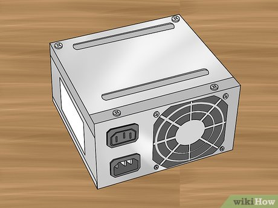
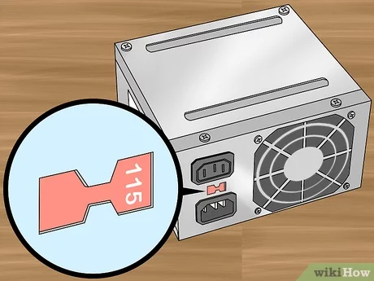
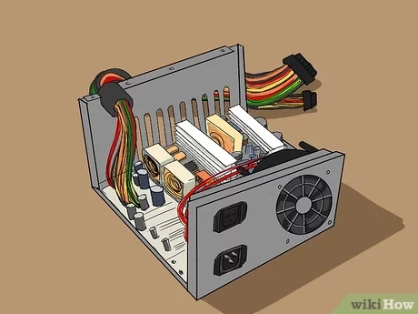
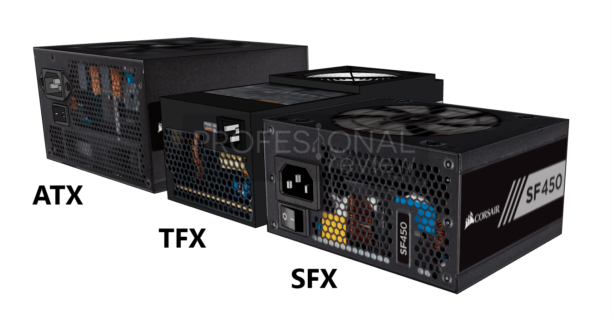
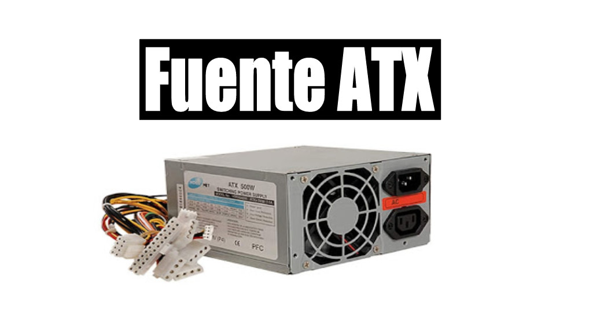
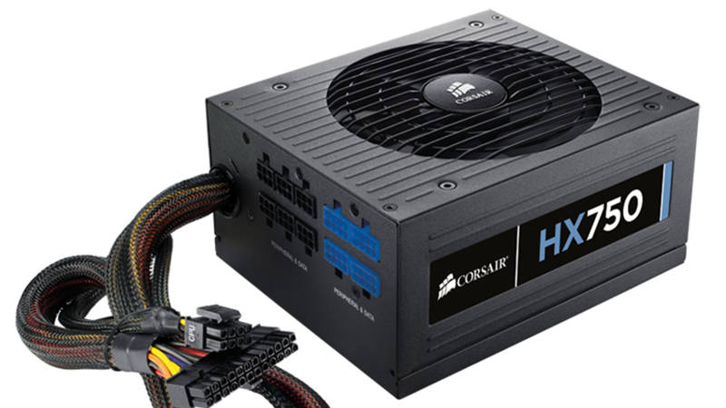
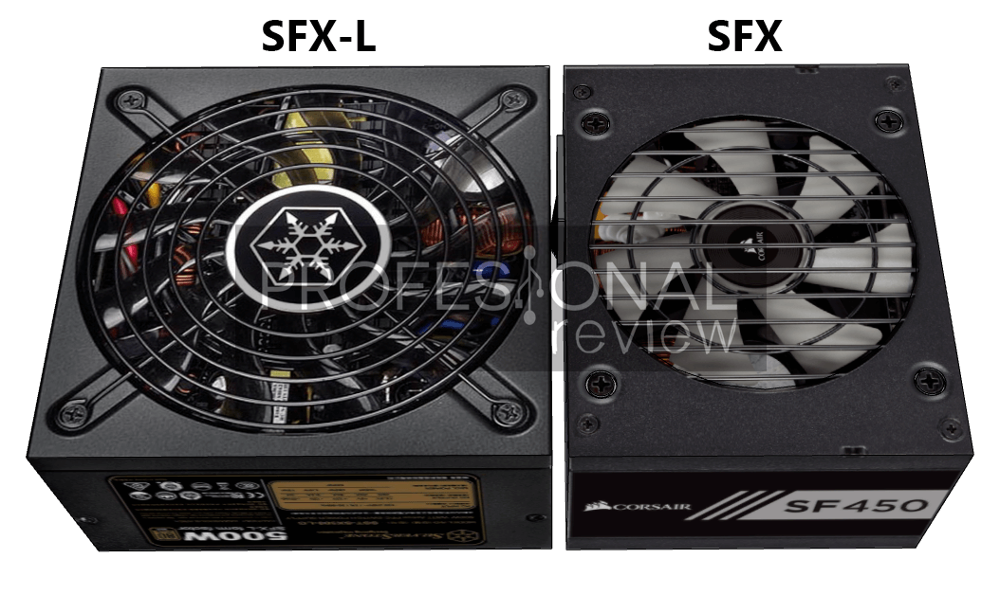

¿Qué es una fuente de poder?
Una fuente de poder es un dispositivo electrónico que transforma la corriente eléctrica alterna (AC) del suministro eléctrico de la casa o la oficina en corriente eléctrica directa (DC) que puede ser utilizada por los componentes de la computadora.
¿Para qué sirve?
La fuente de poder es esencial para que una computadora pueda funcionar. Suministra la energía necesaria para alimentar los componentes electrónicos de la computadora, como el procesador, la memoria, el disco duro, la tarjeta de video, entre otros.
¿Cómo funciona?
La fuente de poder funciona transformando la corriente eléctrica alterna (AC) en corriente eléctrica directa (DC) mediante un circuito de rectificación. Luego, se utiliza un circuito regulador de voltaje para estabilizar el voltaje que suministra la fuente de poder.
Tipos de fuentes de poder
Existen varios tipos de fuentes de poder, como las fuentes AT, ATX y las fuentes de poder modulares. Cada tipo tiene sus propias características y especificaciones técnicas. Es importante elegir la fuente de poder adecuada para la configuración de la computadora.
Fuente de poder ATX
La fuente de poder ATX es el tipo más común y se utiliza en la mayoría de las computadoras de escritorio actuales. Esta fuente de poder se conecta a la placa madre a través de un conector ATX de 24 pines y proporciona energía a todos los componentes de la computadora.
Fuente de poder EPS
La fuente de poder EPS se utiliza en servidores y estaciones de trabajo de alta gama. Esta fuente de poder se conecta a la placa madre a través de un conector EPS de 8 pines o 4+4 pines y proporciona energía adicional al procesador y otros componentes de alta potencia.
Fuente de poder SFX
La fuente de poder SFX es una versión más pequeña de la fuente de poder ATX y se utiliza en computadoras pequeñas o compactas, como las HTPC. Esta fuente de poder se conecta a la placa madre a través de un conector ATX de 24 pines y proporciona energía a todos los componentes de la computadora.